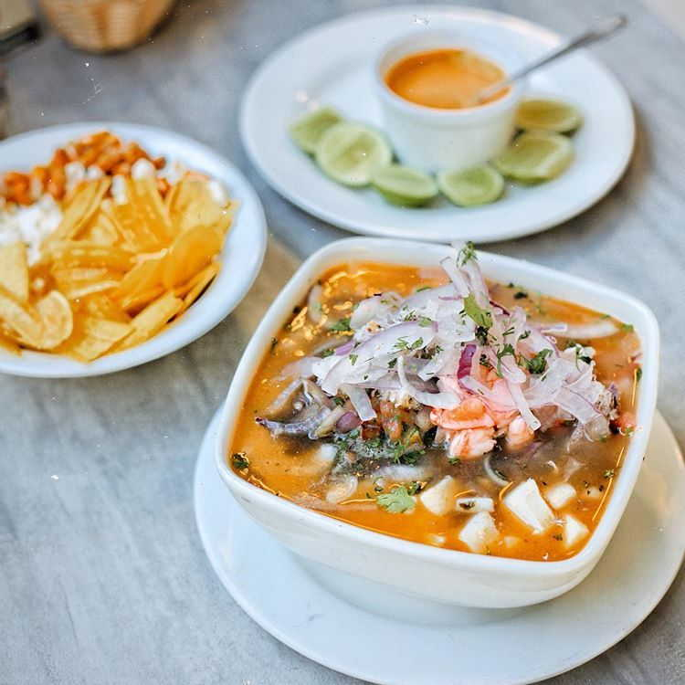
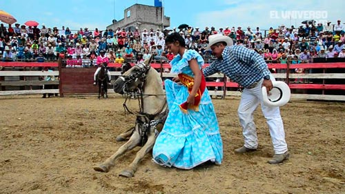
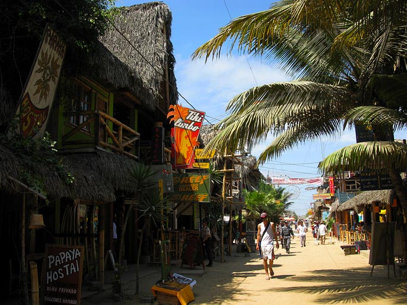
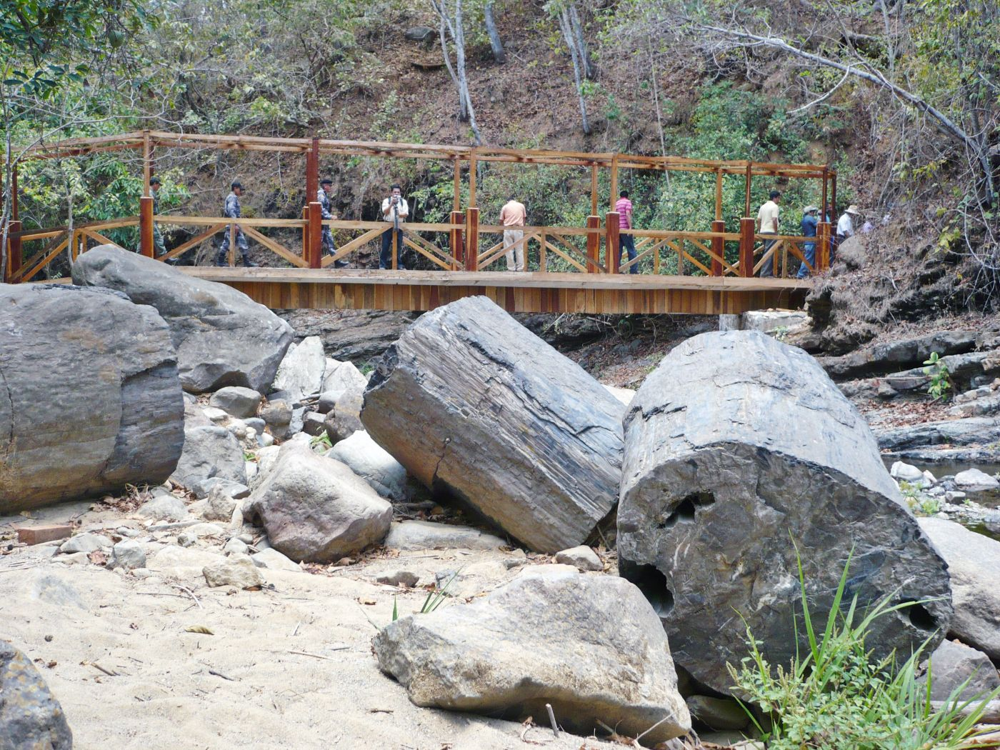
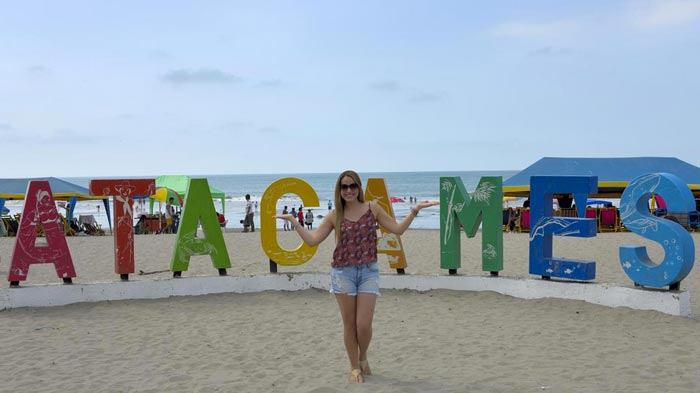
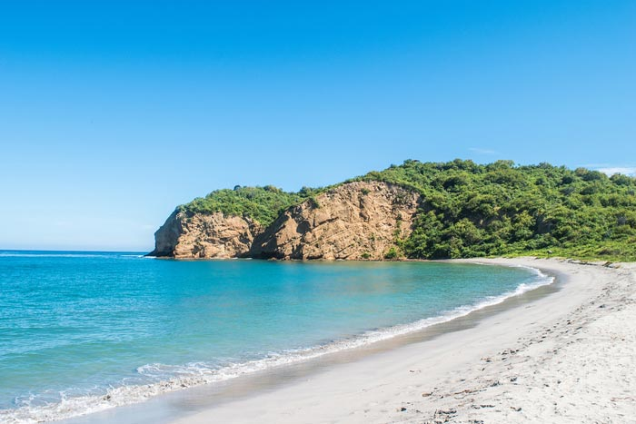
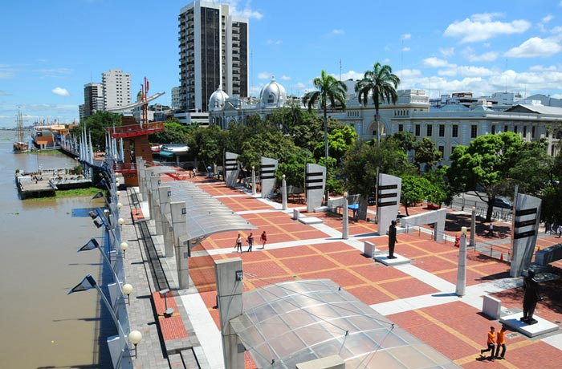
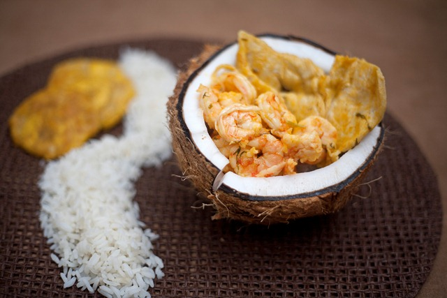
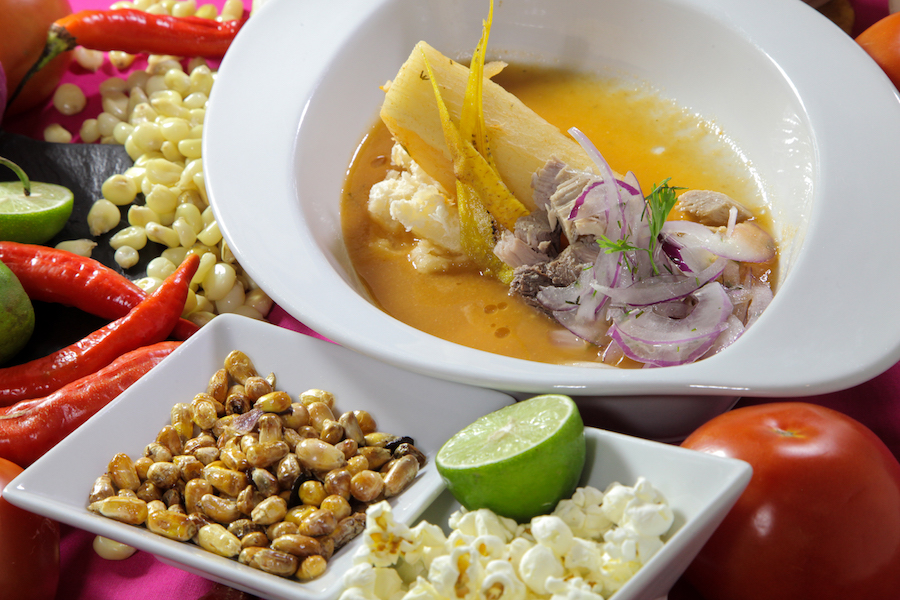

COSTA ECUATORIANA
Bañadas por las aguas del Océano Pacífico y con un clima cálido tropical, durante todo el año, la Costa permite a los viajeros vivir emocionantes aventuras. Montañita, es conocida por los fanáticos de los deportes acuáticos, en particular por surfistas y por los amantes de la playa. La Isla de la Plata, Puerto Cayo y Puerto López son destinos ideales para el avistamiento de las ballenas jorobadas, entre junio y octubre llegan al país para vivir la más romántica historia de amor.
En la profundidad del territorio, alejados del mar, se encuentran, por su parte, pintorescos pueblos, ciudades históricas y modernas, conocidas por su gastronomía local, sus artesanías y sus atractivos turísticos. La pujante ciudad de Guayaquil, se levanta como el puerto principal y la capital económica del país. Kilómetros de plantaciones de cacao, bananas, palmeras y arroz, complementan la riqueza de la Costa cuyos atardeceres de dorados interminables estallan caprichosamente.

Desde las playas cubiertas de palmeras y gigantescos acantilados que se alzan sobre profundas cavernas, hasta los verdes bosques de Mangle o los bosques tropicales secos, los 1600 km (1.000 millas) de playas se tornan interminables en la paradisiaca Costa ecuatoriana. Bañadas por las aguas del Océano Pacífico y cuenta con un clima cálido tropical, durante todo el año, la Costa permite a los viajeros vivir emocionantes y espectaculares aventuras. Montañita, es conocida por los fanáticos de los deportes acuáticos, en particular por surfistas y por los amantes de la playa.

Si de gastronomía se trata, Ecuador es una tierra bendita, como pocos países en el mundo, cuenta con una extensa y exquisita variedad de productos de origen natural, que han sido aprovechados para dar ‘vida’ a verdaderos manjares, platos dignos de los dioses. Y cada región tiene una oferta distinta, como por ejemplo, la Costa, en donde predominan platos como el arroz con menestra y carne, el seco, la salchicha; los preparados con verde como el bolón, el tigrillo, patacones; y por supuesto, los mariscos, camarón, cangrejo, pescado, y muchas delicias más.

La cultura ecuatoriana contemporánea tiene raíces diversas y profundas en una historia tan rica como multiétnica. Así es que se investigó sobre las culturas más representativas de la costa, su lengua, ubicación, vestimenta, tradiciones, etc. Mismas culturas que son: Chorrera, Bahía, Guangala, Jama Coaque, Manteña, Tolita, Valdivia. Cada cultura es interesante debido ya sea debido a sus orígenes, vestimenta, entre otros; analizando lo anterior mencionado se pudo concluir que la Costa ecuatoriana tiene aún vivas sus culturas, dándonos a conocer extraordinarios conocimientos sobre ellas.
LUGARES TURISTICOS
Montañita
Un pequeño pueblo convertido en punto de encuentro para todo turista que visita el Ecuador; encuentras gente de distintas partes del mundo, atraídos por sus reconocidas olas, buen clima, el agradable estilo de vida bohemio y las entretenidas farras nocturnas que goza el lugar, donde cada día de la semana hay una fiesta distinta.

Bosque Petrificado Puyango
Conformado por árboles con una edad aproximada de 100 millones de años y es tal vez la mayor colección de madera petrificada en el mundo; el ejemplar más grande tiene 2 m de diámetro y 15 m de largo. También se encuentran fósiles de hojas que corresponden a cuatro géneros de plantas primitivas semejantes a los helechos y palmas actuales.

Atacames
Se localiza al norte de la región litoral del Ecuador, asentada en una extensa llanura, a orillas del océano Pacífico. Es famosa en todo el Ecuador por poseer una de las playas más grandes del Ecuador y una de las más cercanas a Quito; por lo que la mayoría de los habitantes de esta ciudad hacen de este balneario uno de los más concurridos y populares del país.

Playa Los Frailes
Una playa encantadora y muy limpia (gracias a que se encuentra dentro del Parque Nacional Machalilla,), su arena es blanca, el tono del mar cambia a turquesa y en el sitio existe un mirador –Las Fragatas– que, para llegar a la parte alta y ser testigo de una vista única, se atraviesa primero por un sendero lleno de naturaleza. Por este mismo camino se llega a la playa de La Tortuga, otra orilla natural que no puedes dejar de visitar.

Malecón 2000
Es un proyecto de regeneración urbana del antiguo Malecón Simón Bolívar, de 2.5 km de extensión en donde se puede disfrutar de los grandes monumentos de la historia de Guayaquil, museos, jardines, fuentes, centro comercial, restaurantes, bares, patios de comida, el primer cine IMAX de Sudamérica, así como muelles, desde donde se puede abordar embarcaciones para realizar paseos diurnos y nocturnos por el río Guayas y miradores entre otras atracciones.

Gastronomía

Encocao
Este plato de origen criollo, elaborado con pescado o mariscos es un estofado hecho a bases de leche de coco. Para su preparación es necesario realizar un refrito con cebolla, pimiento y ajo para después hervirlo junto con la leche de coco. Una vez cocinada esta infusión, se mezcla con los mariscos y hierbas locales como el oreganón, el chirarán y la chillangua. Arroz blanco y patacones son compañeros ideales para resaltar los sabores de esta suculenta preparación. En la provincia verde, Esmeraldas, se extiende el mayor cultivo de palma de coco del país.

Encebollado
Es una sopa típica de la costa ecuatoriana, pero en especial de la provincia de Guayas. Su verdadero nombre es ‘picante de pescado’ y según varios historiadores, su origen verdadero se remonta a la cultura Valdivia, quienes cocinaban el pescado a fuego de leña en ollas de cerámica, y que, tras la conquista, sus descendientes fusionaron el pescado con la yuca y otros ingredientes traídos por los españoles. Con los años, esta preparación llegó a la gran ciudad y se convirtió en un medio de subsistencia y de alimentación para los astilleros.

Parrillda
Y si hablamos de la Gastronomía de Santo Domingo de los Tsáchilas, la exquisita Parrillada permite degustar las mejores carnes del Ecuador. El plato consta principalmente de lomo fino, chuleta, ubre, chorizos y demás vísceras, aunque hay variedades que incluyen pollo. Se suele servir en una parrilla con carbón encendido y se acompaña de yuca sea cocida o frita y ensalada fresca de lechuga, tomate y pimiento, además de una deliciosa limonada.

Tigrillo
Plátano verde majado (cocinado y aplastado), mezclado con huevo, queso y chicharrón son los ingredientes que conforman el plato más representativo de la provincia de El Oro. Antiguamente, el pueblo zarumeño, a través de brasas, asaba los plátanos que, al tener contacto con el fuego, se tostaban por partes. Posteriormente eran aplastados con una piedra sobre una batea de madera. Las manchas negras que sobresalían sobre color normal del plátano, similares a las de un felino, dieron el nombre a este delicioso platillo que por lo general es acompañado con un exquisito café de aroma frutal cosechado en tierras Zarumeñas.

Viche
La fusión de verduras, maní y pescado cocinado a fuego lento, dan forma a uno de los manjares más exquisitos de Manabí: el viche. Esta icónica receta cautiva a los paladares más exigentes de todo el planeta que llegan hasta esta provincia costera de Ecuador para probar su sabor fresco e intenso. Este plato es considerado como ancestral ya que sus principales ingredientes fueron usados por nuestros antepasados, y es así que de generación en generación se ha pasado esta receta que se puede degustar tanto en la zona costera como rural de la provincia de Manabí.
Tradiciones

Rodeo Montubio
Esta tradición nace de los vaqueros que habitan en las zonas rurales o del campo, específicamente en el litoral ecuatoriano. Por medio del rodeo los participantes dan una muestra de las costumbres y las habilidades adquiridas en el trabajo que diariamente desempeñan principalmente en sitios como las haciendas.


Amorfinos
Como parte de los rodeos se destacan los amorfinos, que consisten en composiciones cortas poéticas o canciones de origen popular. Estos forman parte de la tradición oral de los pueblos, en donde a diferencia de la copla, se llega a mezclar lo romántico con sentimientos impuestos a partir de las vivencias del corazón.


Polca Montubia
Esta surge gracias al intercambio cultural espontáneo que comenzó a darse cuando los europeos llegaron a Ecuador. Los campesinos y esclavos al ver las danzas europeas las imitaban agregando sus propios ritmos y pasos y es así como surge esta variación de la polca que se fue popularizando en todo el país..